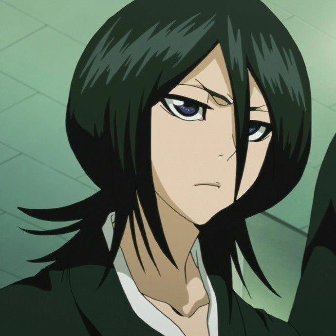
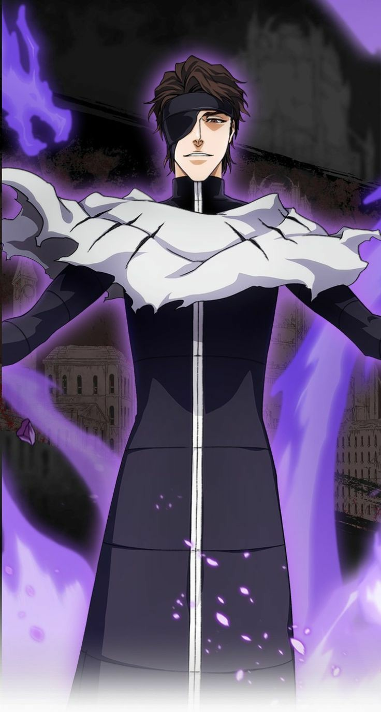

## أنمي بليتش (Bleach): تدور قصة *بليتش* حول فتى مراهق يدعى إيتشيغو كوروساكي، الذي يستطيع رؤية الأرواح منذ صغره. حياته تتغير تمامًا عندما يقابل *روكيا كوتشيكي*، وهي من *حاصدي الأرواح*، المسؤولين عن حماية العالم البشري من الأرواح الشريرة المعروفة باسم "الهولو". أثناء معركة ضد أحد هذه الأرواح، تحصل حادثة تجعل إيتشيغو يكتسب قوى حاصد الأرواح. يبدأ إيتشيغو في القتال ضد الهولو ويحاول حماية أصدقائه وعائلته، وفي الوقت نفسه يدخل عالم الأرواح ويكتشف أسرارًا كثيرة حوله وحول قوته الجديدة. الأنمي يجمع بين الأكشن، المغامرة، والألغاز مع طابع خارق للطبيعة.
إيتشيغو كوروساكي هو طالب في المدرسة الثانوية يمتلك قوى الشينيغامي ويقاتل الأرواح الشريرة.
روكيا كوتشيكي هي شينيغامي علمت إيتشيغو كيفية استخدام قوته لمحاربة الهولو.
ايزين سوسكي هو احد الشخصيات الرئيسية في انمي بليتش كان قائد الفرقة الخامسة في مجتمع الارواح لاكنه انقلب على المجتمع واصبح العدو الرئيسي لفترة كويلة بفضل ذكائة الحاد وقوته الخارقة في استخدام الخدع والتحكم في الحواس.
العودة إلى الصفحة الرئيسية